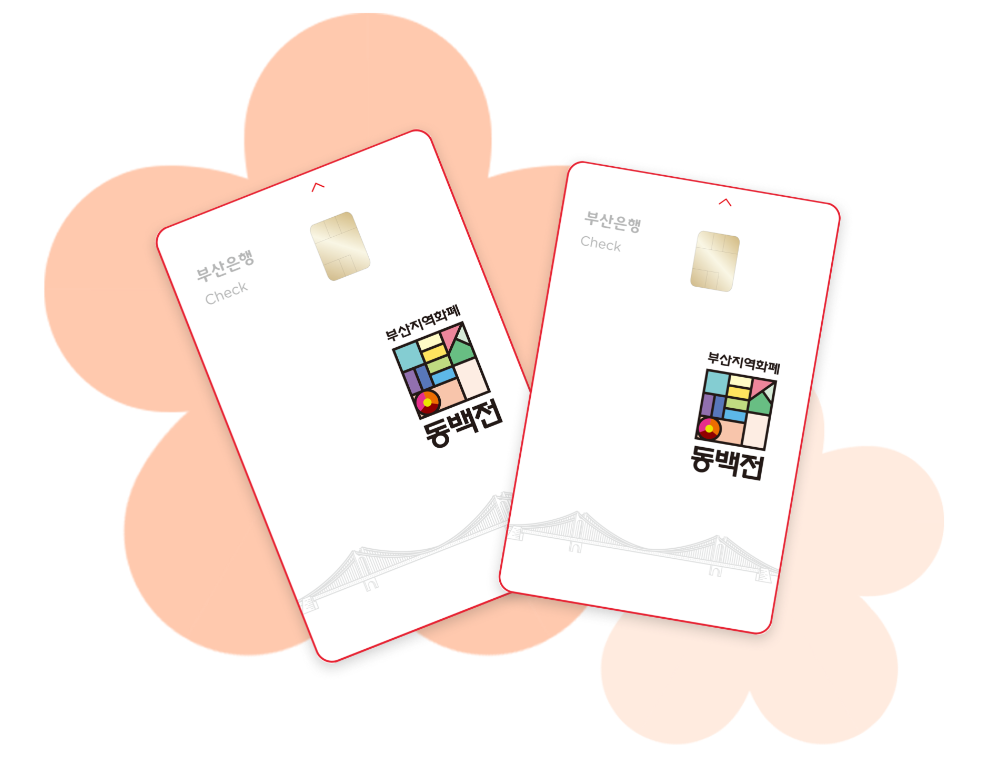
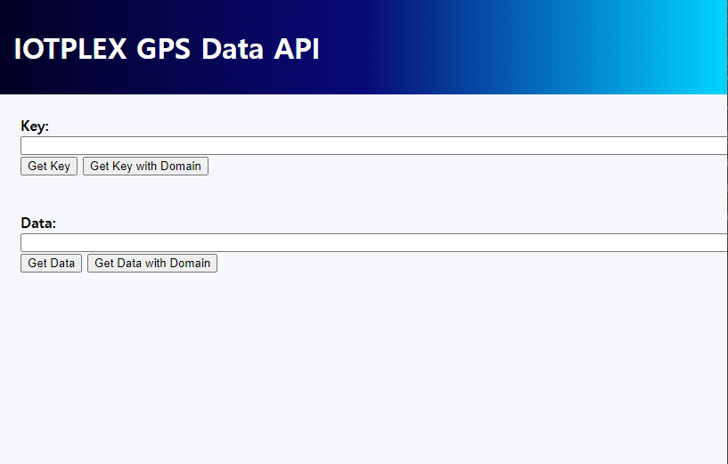
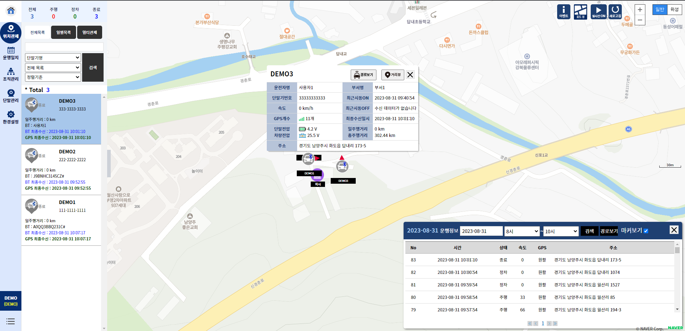
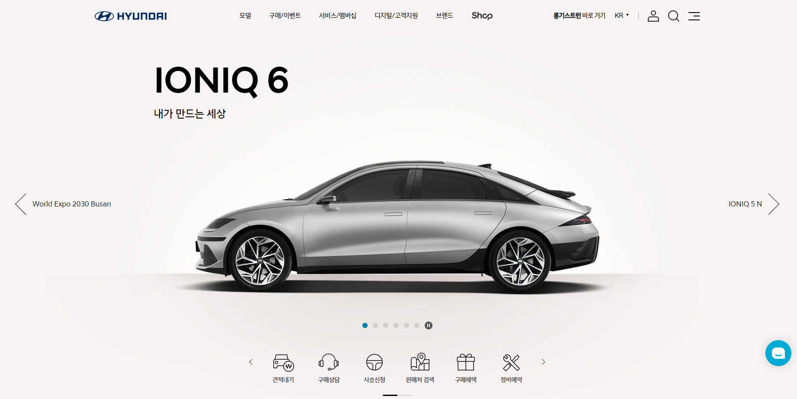
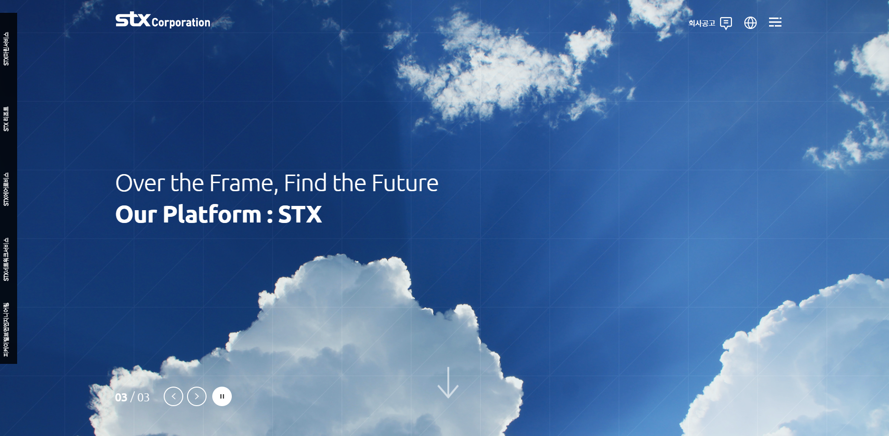
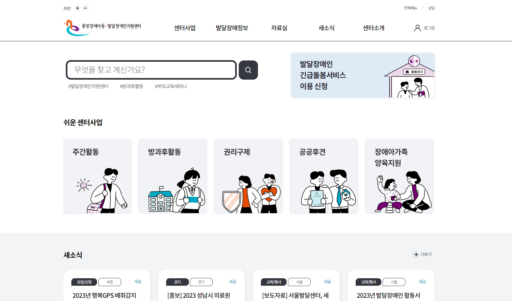

–
5개월
5개월

공공, 제조, 결제, IoT 분야에서 설계부터 구현까지 맡았던 대표 프로젝트입니다. 최신 순으로 정리했습니다.



현대자동차 차세대 Safety, Health, Environment 시스템 구축에 참여했습니다.
내부 업무 시스템
ERP(전사적 자원관리)와 MES(생산관리)를 포함한 스마트공장 시스템을 구축했습니다.
내부 업무 시스템
진해 STX 조선의 KPI, SCM, SHE 시스템을 개발하고 유지보수했습니다.
내부 업무 시스템
